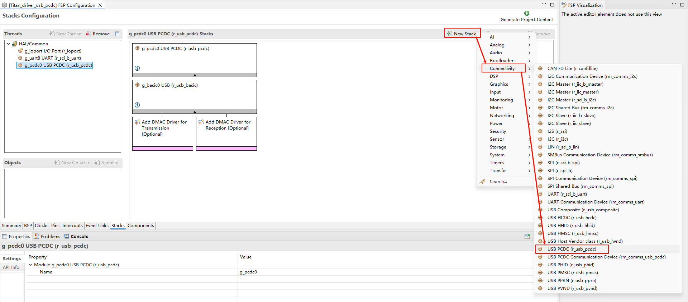

USB-PCDC 驱动例程
中文 | English
简介
本示例演示如何在 Titan Board 上使用 RA8 系列 MCU 的 USB PCDC 模块（r_usb_pcdc） 将设备枚举为 USB 虚拟串口（CDC），从而在 PC 上以 “COM 口/ttyACM” 的形式与板卡进行串行数据通信。
USB PCDC 简介
1. 概述
USB PCDC（USB Peripheral Communications Device Class） 属于 USB 协议中定义的 CDC（Communications Device Class，通信设备类） 的一种实现。
它主要用于 将嵌入式设备通过 USB 接口虚拟成串口（Virtual COM Port, VCOM），使主机（PC、嵌入式 Host）能够像访问传统 UART 串口一样访问 USB 设备。
常见应用场景：
MCU 作为 USB 设备，通过 PCDC 连接到 PC，PC 识别为虚拟串口（COMx）。
嵌入式设备与上位机进行数据通信或调试。
代替物理 RS-232/RS-485 接口，降低硬件成本。
2. PCDC 的协议特性
CDC 类协议
属于 USB 定义的通信类设备，使用标准类驱动（无需额外安装驱动，在 Windows/Linux/MacOS 中大多数情况自动识别）。
数据传输方式
控制端点（Endpoint 0）：用于设备枚举、描述符传输。
中断端点（Interrupt Endpoint）：用于状态和控制信号（如 DTR、RTS）。
批量传输端点（Bulk Endpoint）：用于大数据量的串口数据传输（高效可靠）。
虚拟串口功能
在主机端表现为标准串口（COM 口或 ttyUSB 设备）。
支持波特率、数据位、校验位、停止位等 UART 常见配置。
3. 典型应用架构
USB Device（MCU 端）：实现 PCDC 协议栈，将 USB 数据与 MCU 内部 UART/应用层对接。
USB Host（PC/嵌入式系统）：通过操作系统自带 CDC 驱动，映射出虚拟串口接口。
应用层：上位机可直接使用串口工具（如 PuTTY、Tera Term、串口助手）进行交互。
4. 优点
无需额外驱动：大多数 OS 自带 CDC 驱动。
替代传统串口：即使 MCU 无物理串口，也能通过 USB 实现调试/通信。
速率更高：USB 全速（12 Mbps）、高速（480 Mbps）带宽远高于传统 UART。
通用性强：支持各种上位机应用（LabVIEW、Python pySerial、C# 串口库等）。
RA8 系列 USB PCDC 模块（r_usb_pcdc）简介
RA8 系列 MCU 内置 USB PCDC（Peripheral CDC）模块，专用于将 MCU 枚举为 USB 虚拟串口（CDC 设备），从而实现与 PC 或其他 USB 主机的数据双向通信。该模块与 RA8 的基础 USB 模块（r_usb_basic）结合使用，通过类驱动 r_usb_pcdc 提供完整的 CDC 功能。
1. 模块定位与功能
设备模式支持：实现 MCU 作为 USB 设备连接到主机（Full-Speed / High-Speed，根据具体 MCU 规格）
虚拟串口（CDC）功能：
处理类请求：
SET_LINE_CODING、GET_LINE_CODING、SET_CONTROL_LINE_STATE、SEND_BREAK支持标准 Bulk IN/OUT 端点和 Interrupt IN 端点
生成串口状态通知（如 DTR/RTS、线路状态）
数据收发管理：可通过 DMA/DTC 或 FIFO 缓冲实现大数据量高效传输
事件回调机制：连接、断开、配置完成、数据收发完成、类请求处理、错误事件等
热插拔与低功耗：支持 VBUS 侦测、挂起/唤醒、远程唤醒功能
应用层接口：通过类驱动 API 提供读写缓冲、发送完成通知、事件回调机制
2. 支持能力
标准 USB 枚举：支持 Device Descriptor、Configuration Descriptor、Interface Descriptor 等
端点管理：配置 Bulk IN/OUT 和 Interrupt IN 端点
类请求解析：按 CDC 协议解析行编码、控制线状态
传输可靠性：支持 CRC、NAK、STALL 及超时处理
多设备与复合设备支持：可在 Hub 环境下动态识别和管理多个 CDC 设备
与 DMA 协同：优化数据吞吐，减少 CPU 占用
3. 模块架构
[ 应用层任务/线程 ]
↑ 回调/事件通知（连接、配置、收发完成）
[ r_usb_pcdc 类驱动 ]
↕ 类请求解析、数据收发管理、端点配置
[ r_usb_basic 基础驱动 ]
↕ USB 设备枚举、端点控制、SOF 中断、DMA 支持
[ USB 设备控制器/PHY ]
↕ USB D+/D- 信号（FS）或 ULPI/HS PHY（HS）
[ USB 线缆 ] <—> 主机（PC）
关键子模块说明：
类请求处理器：解析 CDC 类请求，回调上层应用
端点控制与缓冲：管理 Bulk/Interrupt 端点传输，支持 DMA/FIFO
事件管理：连接/断开、配置完成、挂起/恢复、传输完成、错误处理
电源与时钟控制：USB PHY、VBUS 侦测、挂起唤醒管理
4. 工作流程
USB 初始化：USB 控制器、PHY 及类驱动初始化
设备连接检测：检测 VBUS/ID 信号触发枚举
枚举与配置：上传描述符、设置接口和端点
端点数据传输：应用通过 Bulk IN/OUT 与主机进行数据收发
类请求处理：处理主机发来的 CDC 控制请求
事件回调上报：将连接、配置、收发完成等事件通知应用
断开处理：停止端点传输，释放缓冲区，处理拔出事件
硬件说明s
Titan Board 提供一个 USB-Device 外设，位于开发板的位置如下所示：

FSP 配置
新建 r_usb_pcdc stack：

配置 r_usb_basic：

配置 USB FS 引脚：
配置 USB HS 引脚：

PS：注意，切换HS模式需要拉高P413引脚，如下图所示：
RT-Thread Settings 配置
使能 USB PCDC。

编译&下载
RT-Thread Studio：在 RT-Thread Studio 的包管理器中下载 Titan Board 资源包，然后创建新工程，执行编译。
编译完成后，将开发板的 USB-DBG 接口与 PC 机连接，然后将固件下载至开发板。
运行效果
使用 USB 线连接 Titan Board 的 USB-DEV 接口与电脑，使用串口助手打开串口终端，向串口终端中输入 1，能在开发板的调试终端看到输出。
向 USB-PCDC 的串口终端中输入 2，能在 USB-PCDC 的串口终端中看到如下输出。